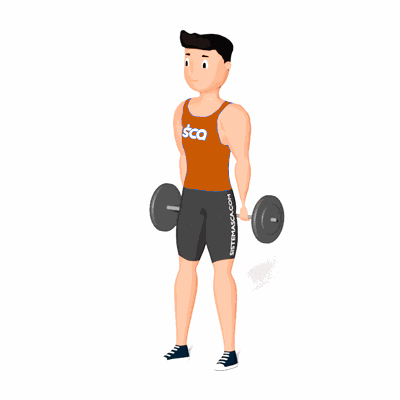

Agachamento Hack com Barra

Um dos exercícios mais populares para fortalecimento e hipertrofia dos músculos da coxa, com enfoque aos músculos vasto intermédio , vasto lateral e vasto medial.
Ficha Técnica
Tipo: Musculação
Grupo Muscular: Perna
Aparelho: Nenhum
Músculos: Nenhum
Como realizar
- Mantenha o torso reto e abaixe-se até que suas coxas fiquem quase paralelas ao chão;
- Estenda os braços para trás e segure a barra com as palmas voltadas para trás e as mãos alinhadas com os ombros;
- Mantenha o queixo paralelo ao chão;
- Apoie seus calcanhares no chão e mova rapidamente seus quadris para cima enquanto se levanta;
- Posicione-se em pé e faça uma pausa no topo, então agache-se de volta à posição inicial.
 RC STORE
RC STORE